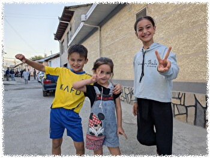
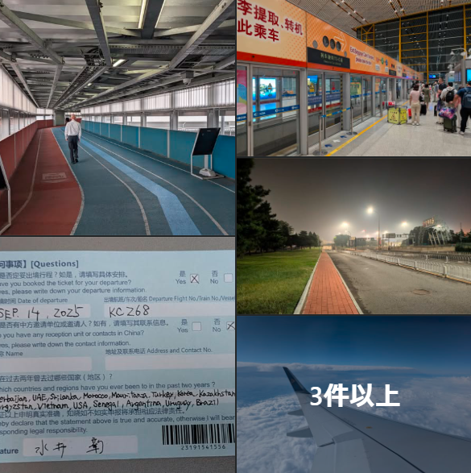
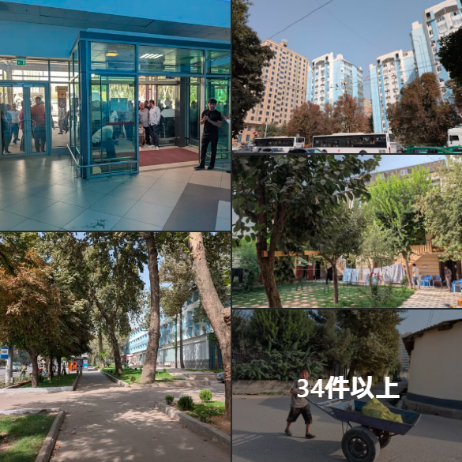
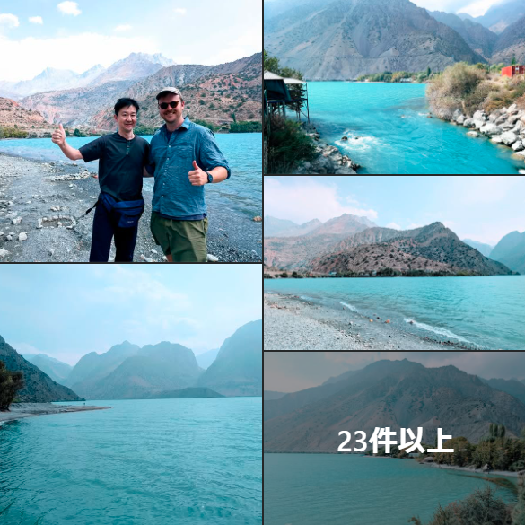
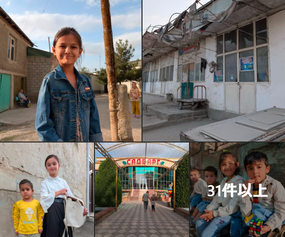
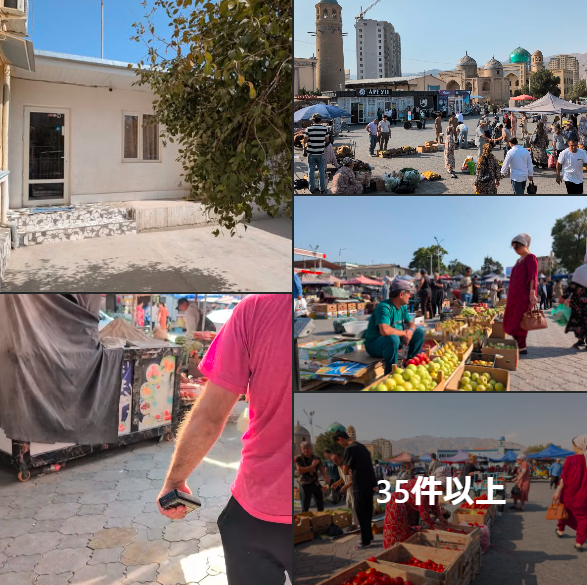
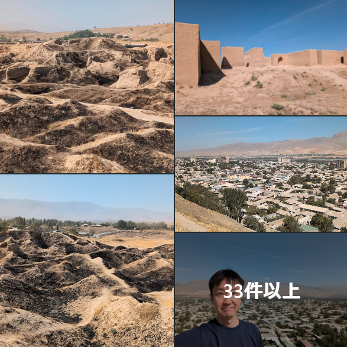
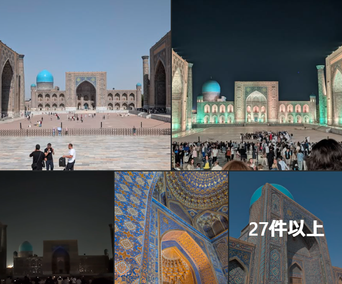
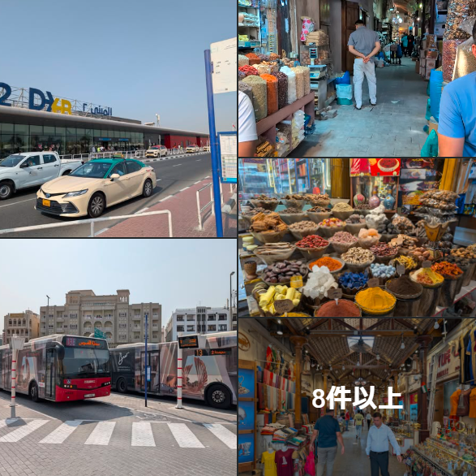

タジキスタン

| Facebookページへは各 |  |
から飛べます |
中央アジア最後のフロンティア、タジキスタン。内戦で荒廃した国土を旅するのは少々ハードだということで体力があるうちに訪れてみることにしました。
【タジキスタン1】他のCIS諸国とは一線を画する中央アジアの最貧国とのことですがドゥシャンベは都会でした。そこでちょっと郊外まで足を延ばしてみようと思います。
【タジキスタン2】タジク人の瞳のような美しい湖水を湛えるイスカンダル湖へやってきました。深い山の中の湖なので帰りの足が見つかるか心配です。
【タジキスタン3】古都イスタラフシャンの中心部に到着。まちに唯一の宿はここから20分ほど歩いた外れにあるのですが、この賑やかなまちに他の宿がないとは信じられません。
【タジキスタン4】国内第二の都市ホジェンドへ来ています。夥しいマルシュルートカが走り回る騒々しいまちです。
【タジキスタン5】ウズベキスタン国境のまちパンジャケントへやってきました。このまちの子どもたちは外国人を見かけると必ず"Hello. What's your name?"と英語で話しかけてきますが話せるわけではありません。
【ウズベキスタン】タジキスタンから陸路でウズベキスタンにやってきました。中央アジアを代表する観光地、青の都サマルカンド。その荘厳さと人々の温かさは6年ぶりの訪問でも変わることはありませんでした。
【UAE】何度も来ているUAEですがドバイ市街にはもう長らく行っていないので、40度近い酷暑の中、乗り継ぎ時間を使って繰り出しました。
